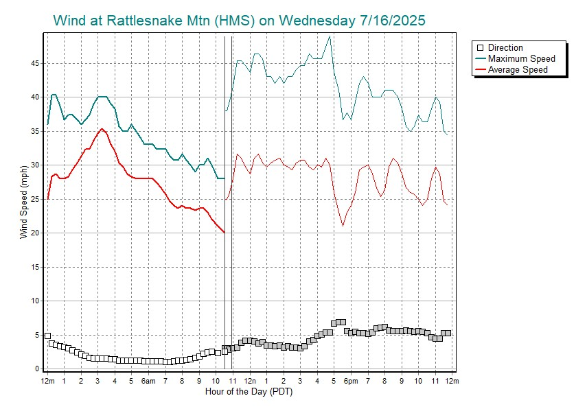
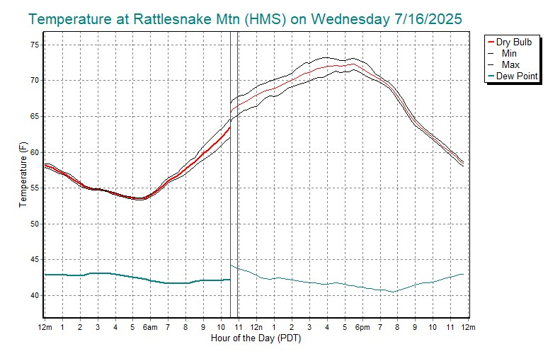
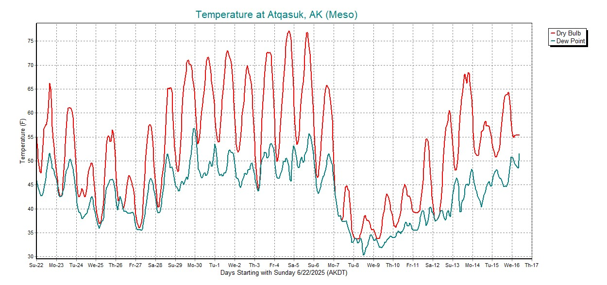
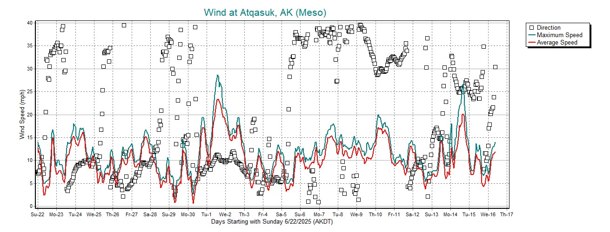
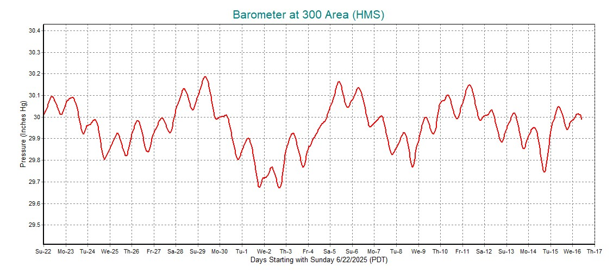
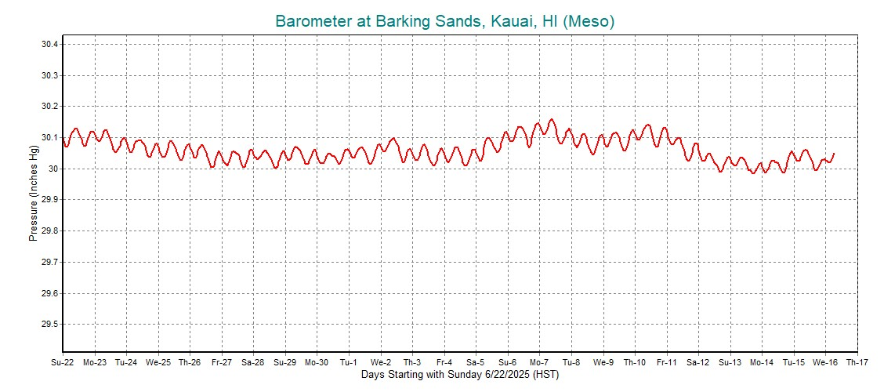
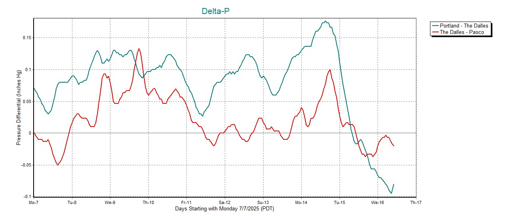

Samples from Rosy.asp
(24-hour charts updated Wednesday, July 16, 2025 at 12:56PM Central).
The orginal ASP page is named Rosy, a nickname windsurfers from the Tri-Cities gave Roosevelt, a sailing site on the east end of the Columbia River gorge.
This first pair of sample charts present wind and temperature (charts are updated occasionally). The site location for these is randomly picked from a list of five stations: RMTN, KRLD, KMKT, PHOG, and PATQ. The two vertical lines and the data plotted to the right of these are explained in the help topic on the 24-hour charting option.


(Multi-day charts updated Wednesday, July 16, 2025 at 12:56PM Central).
In case you know someone who has moved to Alaska.


The following (three) 25-day pressure charts show the contrast between
sites in Alaska, Washington state, and Hawaii. This progression shows the
increase in diurnal pressure variation as the pressure sensor gets closer to
the equator. Here are a couple articles on this:
ScienceDaily and the
University of Wyoming.
This Washington state data (near Richland WA) shows a morning peak about 10am.

The Hawaii data shows the double-peak (10am and 10pm).

The chart below is a 10-day plot of pressure differentials along the Columbia river in Washington. Delta-p data is often used by windsurfers to forecast sailing conditions in the Columbia Gorge. As the west to east pressure differentials rise, so do the summer west winds that blow against the current in the river. These counter-current winds produce the smooth swells that the windsurfers love.
This chart splits the pressure difference into two parts. Notice the mid-day peaks in the west half (green) are commonly followed by a late-day peak in the east half (red). Windsurfers sometimes travel east from Hood River to follow the best winds in the Gorge that typically work their way east during the day.
Many moons ago I lived in Richland WA. It was about an 80-minute drive from there to the Roosevelt WA sailing site on the east end of the Gorge. It often worked out well to take a couple hours of vacation and drive down and catch the late-day peak.
